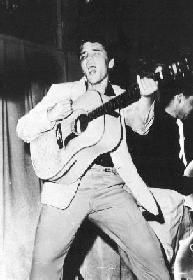

Commonwealth Network

Elvis Presley,The Eternal King of Rock 'n Roll!
Welcome to my Elvis Biography Page!
Click here to see
how many people have visited this page today!
Who was Elvis Presley? How
did he fulfill his career? What was his influences toward the modern
music and the whole society? Have you thought about these simple
questions? Time seems to have wiped most of our memory about this musical
genius. My little biography of Elvis may remind you of Elvis's short but
great life.
Jan 8,1935 Elvis Aron Presley was born at approximately 12.20 PM in
East Tupelo,Mississipi. A twin brother Jesse Garon was stillborn.
Jan 8,1946 Elvis received his first guita on his 11th birthday - it
cost $12.75.
Sep 12,1948 The Presleys moved from Tupelo to Memphis Tennessee. The next day, Elvis enrolled at L.C. Humes High School.
Summer 1953 Elvis made his first demo record at the Memphis Recording Service, 706 Union Avenue. He played guita and sang "My happiness" and "That's when your heartaches begin".
Jul 5,1954 Legend began! Elvis, Scotty Moore (guita) and Bill Black (bass) recorded "That's all right" for Sun Records.
Jul 19,1954 Elvis' first commercial single, Sun 209 "That's all right"/"Blue moon of Kentucky" was released.
Aug 13,1955 BillBoard Magazine described what was becoming the norm at his concerts - A RIOT!
Nov 2,1955 "Mystery Train" reached #1 in the country charts!
Jan 21,1956 The first picture of Elvis was seen in the UK, via popular "Record Mirror".
March,1956 The INTERNATIONAL PHENOMENON began. "Heartbreak Hotel" reached #1 in the US and becamehis first UK release on the HMV label.
August,1956 "Hound Dog"/"Don't be cruel" became his first double
"A" sided #1 hit. Both lasted for 10 weeks!
Nov 16,1956 His first motion-picture "love Me Tender" was released in the US.
Dec 20,1957 Elvis received his draft papers for the US Army.
Mar 24,1958 At 6.30 AM, Elvis arrived at Local Board 86 in Memphis and began his army life as private US 53310761.
Mar 5,1960 Elvis was discharged from the US Army.
Jan 19,1961 "Are you lonesome tonight" was released and stayed at #1 for 4 weeks.
May 1,1965 Elvis married Priscilla Beaulieu at the Alldin Hotel in Las Vegas.
Feb 1,1968 Lisa Marie Presley was born.
Jan 9,1971 The American Junior Chamber of Commerce presented an award to Elvis for being one of the "10 Outstanding Young Men of America".
Oct 9,1973 Elvis and Priscilla were divorced.
Aug 10,1977 Elvis last single during his lifetime was released. "Way Down" - It reached #1 postumously.
Aug 16,1977 Elvis passed away at his Graceland mansion.

Now follow the links below to learn more about our ETERNAL KING OF ROCK 'N ROLL!

 This page was last modified on Mar 8, 1998
This page was last modified on Mar 8, 1998
Return to my Artist Page  .
.
 Elvis Home page at
Sunsite
Elvis Home page at
Sunsite